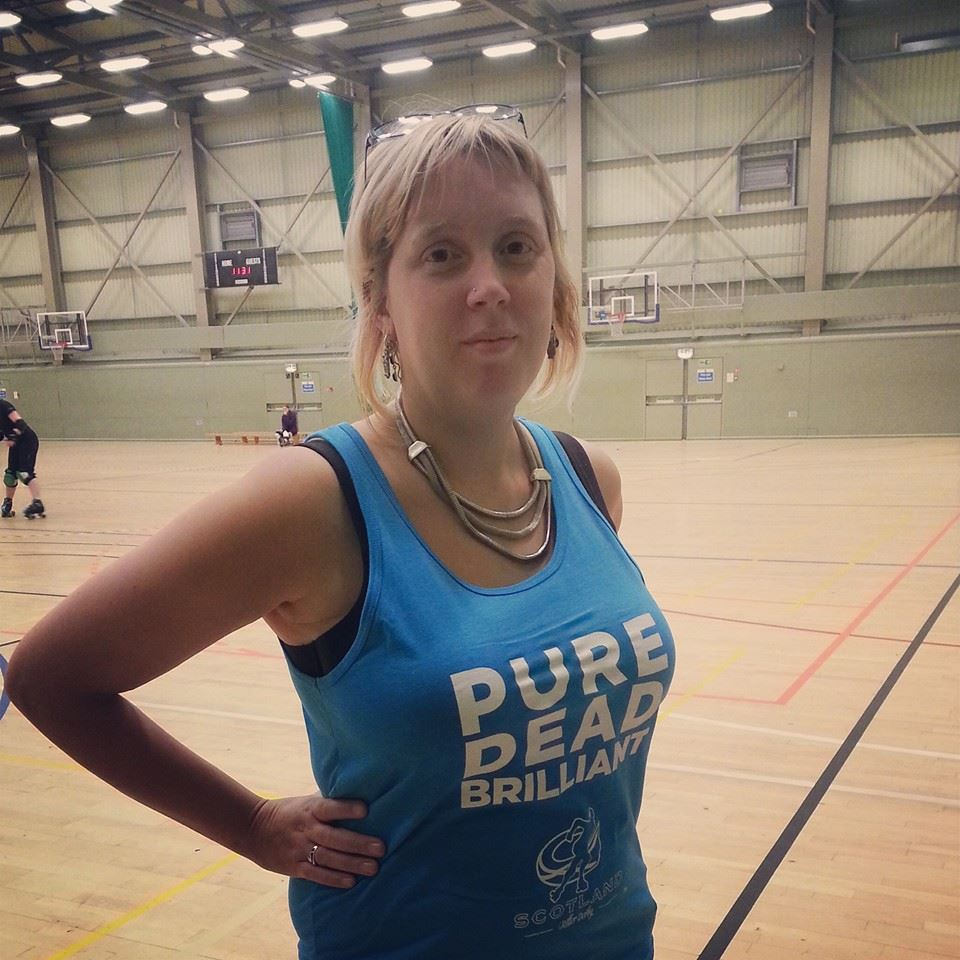
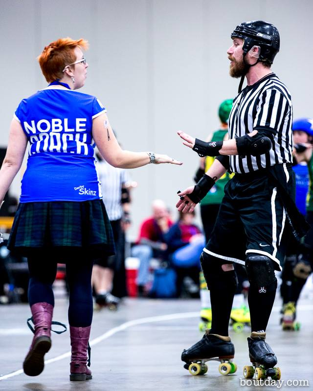

The Japan Open Schedule (Timezones!)
The Japan Open Tournament is the Asia-Pacific's first Roller Derby Tournament on this scale. In order to help you find the right time to watch bouts, we've constructed this handy guide.
Click the name of the region to get a link with times for that timezone. For a preview of the event, with a breakdown of the teams, click HERE.
| TIMEZONE LINKS | |||||
| UK | DANMARK | ALASKA | NEW ZEALAND | AUSTRALIA | JAPAN(日本) |
| UK | ||||||||||
| TRACK 1 | TRACK 2 | |||||||||
| TIME | TEAM 1 | TEAM 2 | SCORE | Stats | LiveStream | TEAM 1 | TEAM 2 | SCORE | Stats | LiveStream |
| 2016-03-25 00:00 | Kokeshi Roller Dolls | Copenhagen Roller Derby | (36:193HT) 49:419 |
Flat Track Stats | YouTube | |||||
| 01:30 | Tokyo Roller Girls | Adelaide Roller Derby | (25:196HT) 46:423 |
Flat Track Stats | YouTube | |||||
| 03:00 | Devil Dog Derby Dames | Juneau Rollergirls | (75:88HT) 122:155 |
Flat Track Stats | YouTube | |||||
| 04:30 | Pirate City Rollers | JRDA Nippon Senbatsu | (255:26HT) 502:88 |
Flat Track Stats | YouTube | |||||
| 06:00 | Misawa Killa Geishas | Devil Dog Derby Dames(HOME) | (99:106HT) 143:241 |
Flat Track Stats | YouTube | |||||
| 07:30 | Copenhagen Roller Derby | Tokyo Roller Girls | (177:21HT) 424:48 |
Flat Track Stats | YouTube | |||||
| 09:00 | Adelaide Roller Derby | Kokeshi Roller Dolls | (230:22HT) 453:38 |
Flat Track Stats | YouTube | |||||
| 2016-03-26 00:00 | JRDA Nippon Senbatsu | Devil Dog Derby Dames(HOME) | (81:182HT) 138:376 |
Flat Track Stats | YouTube | |||||
| 01:30 | Juneau Rollergirls | Tokyo Roller Girls | 156:117 | Flat Track Stats | YouTube | |||||
| 03:00 | Devil Dog Derby Dames | Adelaide Roller Derby | (19:199HT) 44:462 |
Flat Track Stats | YouTube | |||||
| 04:30 | Misawa Killa Geishas | Pirate City Rollers | (75:100HT) 126:243 |
Flat Track Stats | YouTube | |||||
| 06:00 | Copenhagen Roller Derby | Devil Dog Derby Dames | (247:9HT) 388:20 |
Flat Track Stats | YouTube | |||||
| 07:30 | Kokeshi Roller Dolls | Juneau Rollergirls | (57:52HT) 117:97 |
Flat Track Stats | YouTube | |||||
| 09:00 | Adelaide Roller Derby | Copenhagen Roller Derby | (50:74HT) 108:126 |
Flat Track Stats | YouTube | |||||
| Europe/London | ||||||||||
Den Japan Open Tournament er Asien-Stillehavsområdet første Roller Derby turnering. For at hjælpe dig med at finde det rigtige tidspunkt til at se anfald, har vi bygget Denne praktiske guide.
Klik på navnet på regionen til at få et link med tider for den tidszone. For et eksempel på begivenheden, med en beskrivelse af holdene, så klik HER.
| TIMEZONE LINKS | |||||
| UK | DANMARK | ALASKA | NEW ZEALAND | AUSTRALIA | JAPAN(日本) |
| DANMARK | ||||||||||
| BANE 1 | BANE 2 | |||||||||
| TID | HOLD 1 | HOLD 2 | SCORE | Stats | LiveStream | HOLD 1 | HOLD 2 | SCORE | Stats | LiveStream |
| 2016-03-25 01:00 | Kokeshi Roller Dolls | Copenhagen Roller Derby | (36:193HT) 49:419 |
Flat Track Stats | YouTube | |||||
| 02:30 | Tokyo Roller Girls | Adelaide Roller Derby | (25:196HT) 46:423 |
Flat Track Stats | YouTube | |||||
| 04:00 | Devil Dog Derby Dames | Juneau Rollergirls | (75:88HT) 122:155 |
Flat Track Stats | YouTube | |||||
| 05:30 | Pirate City Rollers | JRDA Nippon Senbatsu | (255:26HT) 502:88 |
Flat Track Stats | YouTube | |||||
| 07:00 | Misawa Killa Geishas | Devil Dog Derby Dames(HOME) | (99:106HT) 143:241 |
Flat Track Stats | YouTube | |||||
| 08:30 | Copenhagen Roller Derby | Tokyo Roller Girls | (177:21HT) 424:48 |
Flat Track Stats | YouTube | |||||
| 10:00 | Adelaide Roller Derby | Kokeshi Roller Dolls | (230:22HT) 453:38 |
Flat Track Stats | YouTube | |||||
| 2016-03-26 01:00 | JRDA Nippon Senbatsu | Devil Dog Derby Dames(HOME) | (81:182HT) 138:376 |
Flat Track Stats | YouTube | |||||
| 02:30 | Juneau Rollergirls | Tokyo Roller Girls | 156:117 | Flat Track Stats | YouTube | |||||
| 04:00 | Devil Dog Derby Dames | Adelaide Roller Derby | (19:199HT) 44:462 |
Flat Track Stats | YouTube | |||||
| 05:30 | Misawa Killa Geishas | Pirate City Rollers | (75:100HT) 126:243 |
Flat Track Stats | YouTube | |||||
| 07:00 | Copenhagen Roller Derby | Devil Dog Derby Dames | (247:9HT) 388:20 |
Flat Track Stats | YouTube | |||||
| 08:30 | Kokeshi Roller Dolls | Juneau Rollergirls | (57:52HT) 117:97 |
Flat Track Stats | YouTube | |||||
| 10:00 | Adelaide Roller Derby | Copenhagen Roller Derby | (50:74HT) 108:126 |
Flat Track Stats | YouTube | |||||
| Europe/Copenhagen | ||||||||||
The Japan Open Tournament is the Asia-Pacific's first Roller Derby Tournament on this scale. In order to help you find the right time to watch bouts, we've constructed this handy guide.
Click the name of the region to get a link with times for that timezone. For a preview of the event, with a breakdown of the teams, click HERE.
| TIMEZONE LINKS | |||||
| UK | DANMARK | ALASKA | NEW ZEALAND | AUSTRALIA | JAPAN(日本) |
| ALASKA | ||||||||||
| TRACK 1 | TRACK 2 | |||||||||
| TIME | TEAM 1 | TEAM 2 | SCORE | Stats | LiveStream | TEAM 1 | TEAM 2 | SCORE | Stats | LiveStream |
| 2016-03-24 16:00 | Kokeshi Roller Dolls | Copenhagen Roller Derby | (36:193HT) 49:419 |
Flat Track Stats | YouTube | |||||
| 17:30 | Tokyo Roller Girls | Adelaide Roller Derby | (25:196HT) 46:423 |
Flat Track Stats | YouTube | |||||
| 19:00 | Devil Dog Derby Dames | Juneau Rollergirls | (75:88HT) 122:155 |
Flat Track Stats | YouTube | |||||
| 20:30 | Pirate City Rollers | JRDA Nippon Senbatsu | (255:26HT) 502:88 |
Flat Track Stats | YouTube | |||||
| 22:00 | Misawa Killa Geishas | Devil Dog Derby Dames(HOME) | (99:106HT) 143:241 |
Flat Track Stats | YouTube | |||||
| 23:30 | Copenhagen Roller Derby | Tokyo Roller Girls | (177:21HT) 424:48 |
Flat Track Stats | YouTube | |||||
| 2016-03-25 01:00 | Adelaide Roller Derby | Kokeshi Roller Dolls | (230:22HT) 453:38 |
Flat Track Stats | YouTube | |||||
| 16:00 | JRDA Nippon Senbatsu | Devil Dog Derby Dames(HOME) | (81:182HT) 138:376 |
Flat Track Stats | YouTube | |||||
| 17:30 | Juneau Rollergirls | Tokyo Roller Girls | 156:117 | Flat Track Stats | YouTube | |||||
| 19:00 | Devil Dog Derby Dames | Adelaide Roller Derby | (19:199HT) 44:462 |
Flat Track Stats | YouTube | |||||
| 20:30 | Misawa Killa Geishas | Pirate City Rollers | (75:100HT) 126:243 |
Flat Track Stats | YouTube | |||||
| 22:00 | Copenhagen Roller Derby | Devil Dog Derby Dames | (247:9HT) 388:20 |
Flat Track Stats | YouTube | |||||
| 23:30 | Kokeshi Roller Dolls | Juneau Rollergirls | (57:52HT) 117:97 |
Flat Track Stats | YouTube | |||||
| 2016-03-26 01:00 | Adelaide Roller Derby | Copenhagen Roller Derby | (50:74HT) 108:126 |
Flat Track Stats | YouTube | |||||
| America/Juneau | ||||||||||
The Japan Open Tournament is the Asia-Pacific's first Roller Derby Tournament on this scale. In order to help you find the right time to watch bouts, we've constructed this handy guide.
Click the name of the region to get a link with times for that timezone. For a preview of the event, with a breakdown of the teams, click HERE.
| TIMEZONE LINKS | |||||
| UK | DANMARK | ALASKA | NEW ZEALAND | AUSTRALIA | JAPAN(日本) |
| NEW ZEALAND | ||||||||||
| TRACK 1 | TRACK 2 | |||||||||
| TIME | TEAM 1 | TEAM 2 | SCORE | Stats | LiveStream | TEAM 1 | TEAM 2 | SCORE | Stats | LiveStream |
| 2016-03-25 13:00 | Kokeshi Roller Dolls | Copenhagen Roller Derby | (36:193HT) 49:419 |
Flat Track Stats | YouTube | |||||
| 14:30 | Tokyo Roller Girls | Adelaide Roller Derby | (25:196HT) 46:423 |
Flat Track Stats | YouTube | |||||
| 16:00 | Devil Dog Derby Dames | Juneau Rollergirls | (75:88HT) 122:155 |
Flat Track Stats | YouTube | |||||
| 17:30 | Pirate City Rollers | JRDA Nippon Senbatsu | (255:26HT) 502:88 |
Flat Track Stats | YouTube | |||||
| 19:00 | Misawa Killa Geishas | Devil Dog Derby Dames(HOME) | (99:106HT) 143:241 |
Flat Track Stats | YouTube | |||||
| 20:30 | Copenhagen Roller Derby | Tokyo Roller Girls | (177:21HT) 424:48 |
Flat Track Stats | YouTube | |||||
| 22:00 | Adelaide Roller Derby | Kokeshi Roller Dolls | (230:22HT) 453:38 |
Flat Track Stats | YouTube | |||||
| 2016-03-26 13:00 | JRDA Nippon Senbatsu | Devil Dog Derby Dames(HOME) | (81:182HT) 138:376 |
Flat Track Stats | YouTube | |||||
| 14:30 | Juneau Rollergirls | Tokyo Roller Girls | 156:117 | Flat Track Stats | YouTube | |||||
| 16:00 | Devil Dog Derby Dames | Adelaide Roller Derby | (19:199HT) 44:462 |
Flat Track Stats | YouTube | |||||
| 17:30 | Misawa Killa Geishas | Pirate City Rollers | (75:100HT) 126:243 |
Flat Track Stats | YouTube | |||||
| 19:00 | Copenhagen Roller Derby | Devil Dog Derby Dames | (247:9HT) 388:20 |
Flat Track Stats | YouTube | |||||
| 20:30 | Kokeshi Roller Dolls | Juneau Rollergirls | (57:52HT) 117:97 |
Flat Track Stats | YouTube | |||||
| 22:00 | Adelaide Roller Derby | Copenhagen Roller Derby | (50:74HT) 108:126 |
Flat Track Stats | YouTube | |||||
| Pacific/Auckland | ||||||||||
The Japan Open Tournament is the Asia-Pacific's first Roller Derby Tournament on this scale. In order to help you find the right time to watch bouts, we've constructed this handy guide.
Click the name of the region to get a link with times for that timezone. For a preview of the event, with a breakdown of the teams, click HERE.
| TIMEZONE LINKS | |||||
| UK | DANMARK | ALASKA | NEW ZEALAND | AUSTRALIA | JAPAN(日本) |
| AUSTRALIA | ||||||||||
| TRACK 1 | TRACK 2 | |||||||||
| TIME | TEAM 1 | TEAM 2 | SCORE | Stats | LiveStream | TEAM 1 | TEAM 2 | SCORE | Stats | LiveStream |
| 2016-03-25 10:30 | Kokeshi Roller Dolls | Copenhagen Roller Derby | (36:193HT) 49:419 |
Flat Track Stats | YouTube | |||||
| 12:00 | Tokyo Roller Girls | Adelaide Roller Derby | (25:196HT) 46:423 |
Flat Track Stats | YouTube | |||||
| 13:30 | Devil Dog Derby Dames | Juneau Rollergirls | (75:88HT) 122:155 |
Flat Track Stats | YouTube | |||||
| 15:00 | Pirate City Rollers | JRDA Nippon Senbatsu | (255:26HT) 502:88 |
Flat Track Stats | YouTube | |||||
| 16:30 | Misawa Killa Geishas | Devil Dog Derby Dames(HOME) | (99:106HT) 143:241 |
Flat Track Stats | YouTube | |||||
| 18:00 | Copenhagen Roller Derby | Tokyo Roller Girls | (177:21HT) 424:48 |
Flat Track Stats | YouTube | |||||
| 19:30 | Adelaide Roller Derby | Kokeshi Roller Dolls | (230:22HT) 453:38 |
Flat Track Stats | YouTube | |||||
| 2016-03-26 10:30 | JRDA Nippon Senbatsu | Devil Dog Derby Dames(HOME) | (81:182HT) 138:376 |
Flat Track Stats | YouTube | |||||
| 12:00 | Juneau Rollergirls | Tokyo Roller Girls | 156:117 | Flat Track Stats | YouTube | |||||
| 13:30 | Devil Dog Derby Dames | Adelaide Roller Derby | (19:199HT) 44:462 |
Flat Track Stats | YouTube | |||||
| 15:00 | Misawa Killa Geishas | Pirate City Rollers | (75:100HT) 126:243 |
Flat Track Stats | YouTube | |||||
| 16:30 | Copenhagen Roller Derby | Devil Dog Derby Dames | (247:9HT) 388:20 |
Flat Track Stats | YouTube | |||||
| 18:00 | Kokeshi Roller Dolls | Juneau Rollergirls | (57:52HT) 117:97 |
Flat Track Stats | YouTube | |||||
| 19:30 | Adelaide Roller Derby | Copenhagen Roller Derby | (50:74HT) 108:126 |
Flat Track Stats | YouTube | |||||
| Australia/Adelaide | ||||||||||
ジャパンオープン大会は、アジア太平洋地域初のローラーダービートーナメントです。あなたは試合を見て適切な時期を見つけるために、我々はこの便利なガイドを構築してきました。
その時間帯のための時間とリンクを取得するために地域の名前をクリックします。イベントのプレビューのために、チームの説明では、こちらをクリックしてください。
| TIMEZONE LINKS | |||||
| UK | DANMARK | ALASKA | NEW ZEALAND | AUSTRALIA | JAPAN(日本) |
| JAPAN(日本) | ||||||||||
| TRACK(コート) 1 | TRACK(コート) 2 | |||||||||
| 時 | チーム 1 | チーム 2 | 得点 | 統計 | 映像 | チーム 1 | チーム 2 | 得点 | 統計 | 映像 |
| 2016-03-25 09:00 | Kokeshi Roller Dolls (沖縄) |
Copenhagen Roller Derby (デンマーク) |
(36:193HT) 49:419 |
Flat Track Stats | YouTube | |||||
| 10:30 | Tokyo Roller Girls (東京) |
Adelaide Roller Derby (オーストラリア) |
(25:196HT) 46:423 |
Flat Track Stats | YouTube | |||||
| 12:00 | Devil Dog Derby Dames (沖縄) |
Juneau Rollergirls (アラスカ州米国) |
(75:88HT) 122:155 |
Flat Track Stats | YouTube | |||||
| 13:30 | Pirate City Rollers (ニュージーランド) |
JRDA Nippon Senbatsu (日本「陳列」) |
(255:26HT) 502:88 |
Flat Track Stats | YouTube | |||||
| 15:00 | Misawa Killa Geishas (三沢) |
Devil Dog Derby Dames(HOME) (沖縄) |
(99:106HT) 143:241 |
Flat Track Stats | YouTube | |||||
| 16:30 | Copenhagen Roller Derby (デンマーク) |
Tokyo Roller Girls (東京) |
(177:21HT) 424:48 |
Flat Track Stats | YouTube | |||||
| 18:00 | Adelaide Roller Derby (オーストラリア) |
Kokeshi Roller Dolls (沖縄) |
(230:22HT) 453:38 |
Flat Track Stats | YouTube | |||||
| 2016-03-26 09:00 | JRDA Nippon Senbatsu (日本「陳列」) |
Devil Dog Derby Dames(HOME) (沖縄) |
(81:182HT) 138:376 |
Flat Track Stats | YouTube | |||||
| 10:30 | Juneau Rollergirls (アラスカ州米国) |
Tokyo Roller Girls (東京) |
156:117 | Flat Track Stats | YouTube | |||||
| 12:00 | Devil Dog Derby Dames (沖縄) |
Adelaide Roller Derby (オーストラリア) |
(19:199HT) 44:462 |
Flat Track Stats | YouTube | |||||
| 13:30 | Misawa Killa Geishas (三沢) |
Pirate City Rollers (ニュージーランド) |
(75:100HT) 126:243 |
Flat Track Stats | YouTube | |||||
| 15:00 | Copenhagen Roller Derby (デンマーク) |
Devil Dog Derby Dames (沖縄) |
(247:9HT) 388:20 |
Flat Track Stats | YouTube | |||||
| 16:30 | Kokeshi Roller Dolls (沖縄) |
Juneau Rollergirls (アラスカ州米国) |
(57:52HT) 117:97 |
Flat Track Stats | YouTube | |||||
| 18:00 | Adelaide Roller Derby (オーストラリア) |
Copenhagen Roller Derby (デンマーク) |
(50:74HT) 108:126 |
Flat Track Stats | YouTube | |||||
| Asia/Tokyo | ||||||||||
New Skaters on track for New Town Cherry Popper
This March 19th sees the Livingston area's New Town Roller Girls host a one of roller derby's traditions - a cherry popper bout, showcasing new skaters from a mix of leagues. The bout will be held in New Town's current bouting venue, Blackburn Community Centre.

Skaters from Auld Reekie Roller Girls, Bairn City Rollers, Lothian Derby Dolls, Doonhame Derby Dolls, Ayrshire Roller Derby, Fair City Rollers and Preston Roller Girls will join host New Town's own new skaters on track in two exhibition teams: The Morello Mashers (skating in hot pink) and the Women of Mass Destruction (skating in sapphire).
This is an ideal opportunity to see the potential of new roller derby skaters as they play their first bout in public. It's particularly exciting to see skaters from some of Scotland's leagues who are not publicly bouting yet, as this is a preview of perhaps what we might expect from Ayrshire, Doonhame and Fair City when they enter public bouts as a team.
This is a slightly later game than we normally have in Scotland, with doors opening at 4:45pm, for a 5:15pm start.
Tickets are available online from brownpapertickets for just £4. Under 14s are free. Tickets will also be available on the door.
European Smackdown - the Statistics
Crime City Rollers' European Smackdown wasn't just a history-making event, bringing WFTDA-sanctioned Division 1 derby to mainland Europe, it was also our first chance to get a look at how those Division 1 teams have changed as the new season starts.
As we mentioned in a previous article, despite the fact that Euro Smackdown wasn't a true tournament (it was more of an invitational, with teams playing different numbers of bouts, and no attempt at ranking them by performance), the fact that it produced a large number of match-ups means that we can use Bayesian inference techniques to infer what the actual relative power of the participating teams are.
To start off, lets look at the actual results (versus the predictions from FlatTrackStats). We don't consider WFTDA Rankings because the ranking scheme that WFTDA uses combines Team Strength with Strength of Schedule (how many "hard" opponents you played), and so does not purely reflect the actual relative strength of teams.
| Bout | Score(HT) | Score(FT) | Score Ratio (HT) FT | FTS Predicted Score Ratio |
| London:Detroit | 146:47 | 345:79 | (3.1) 4.3 | 6.6 |
| Glasgow:Malmö | 39:257 | 46:536 | (0.15) 0.09 | 0.65 |
| London:Stockholm | 133:31 | 295:49 | (4.2) 6.0 | 4.9 |
| Glasgow:Helsinki | 43:212 | 73:485 | (0.20) 0.31 | 0.85 |
| Detroit:Malmö | 37:130 | 75:233 | (0.28) 0.32 | 0.875 |
| DAY 2 | ||||
| London:Glasgow | 322:3 | 526:9 | (100) 58 | 7.8 |
| Malmö:Helsinki | 79:36 | 176:70 | (2.2) 2.5 | 1.4 |
| Glasgow:Stockholm | 27:182 | 66:371 | (0.15) 0.18 | 0.59 |
| Detroit:Helsinki | 94:73 | 162:216 | (1.3) 0.75 | 1.1 |
| London:Malmö
(notsanctioned) |
194:33 | 311:98 | (5.9) 3.2 | 5.4 |
Another thing we can see is which games were "games of two halves" - the Detroit/Helsinki, Glasgow/London and London/Malmö games all exhibit very strong shifts between the scores at half-time and full-time - in fact, by almost 50%!
Now, onto the actual strength calculations!
We ran 300000 steps of a Bayesian Monte-Carlo simulation on the Euro Smackdown data, with 600 "walkers" per step. This allows us to explore the space of "possible strengths" and determine what the most likely strengths are for each Team competing.
As London Roller Girls were overwhelmingly likely to be the strongest team in the tournament, we calculate strengths for the remaining 5 teams relative to London. Strength here is "how many points London would score, in an average game, for every point the team scored". We use FTS ratings as a basis for our comparisons, as WFTDA rankings do not purely reflect the strength of teams.
 Plot of predicted and inferred Team Strengths (relative to London Roller Girls). Strengths are "approximate number of points London would score, for every point the Team scores")
Plot of predicted and inferred Team Strengths (relative to London Roller Girls). Strengths are "approximate number of points London would score, for every point the Team scores")
This graph shows two sets of data.
The vertical lines indicate how strong FlatTrackStats thought the teams should be, relative to London Roller Girls, before the tournament starts. As FlatTrackStats's ranking algorithm is relatively conservative, this approximates to the performance of the teams at the end of last year.
The histograms show the distribution of "consistent" team strengths, inferred from the results of European Smackdown. The peaks of the distributions correspond to the most likely strengths for each team.
As can be seen, there's two pretty obvious outliers - Crime City Rollers (marked as "Malmo") are significantly stronger than FTS thought they should be; and Glasgow Roller Derby are significantly weaker. The other three teams, Detroit, Helsinki and Stockholm are bunched close enough together that it's hard to separate them in this scale.
We can get a better look at the grouping for lower strength teams if we exclude the London bouts from consideration. One issue with London's strength is that its opponents score lower, meaning that each point is "worth" more in terms of altering their proportional strength. (The difference between a final score of 3 and 4 is a 33% change in your strength!) This makes predictions a bit more fuzzy.
 Inferred strengths for Detroit, Stockholm, Helsinki, Glasgow with respect to Crime City (as Malmo).
Inferred strengths for Detroit, Stockholm, Helsinki, Glasgow with respect to Crime City (as Malmo).
The above graph is calculated in the same way, but from only the bouts not involving London (and therefore shows strength relative to Crime City, as MALMO). It's a little clearer from this analysis that Detroit is measurably distinct in strength from Stockholm and Helsinki, and Stockholm and Helsinki are almost separable themselves.
Another interesting feature of the full analysis, is that, while the outliers are both "far" from their predictions, the set of all strengths is still relatively symmetrically distributed around FTS's predictions. This implies that London themselves haven't significantly altered in strength over the winter - any large shifts in the teams relative to them are due to those teams own strength changing.
The results of this analysis suggest that either Crime City Rollers had a significant home-teams advantage, or they're significantly improved (by about 50%) after taking a break over Winter. If the latter is the case, we expect them to be a significant force in Division 1 this year - this performance puts them closer to teams like Montreal or Atlanta!
Meanwhile, Glasgow's performance this year seems to have been hit by the departure of several strong pivots from the A-Team Roster, with Mona Rampage, (The Very Hungry) Splat(erkiller), and Jen Sykes all missing from the roster. Conservatively, their performance here is roughly 1/6th as strong as they evidenced in Division 1 tournament in the USA last year. Hopefully, this is simply a consequence of the restructuring early in the season, and the new roster will continue to strengthen and gel over the coming year...
Of the other teams, Stockholm have slightly fallen back from their high-point last year, possibly following the departure of one of their star jammers, Mad Malooney. (It's tempting to suggest that the slight increase in performance by Helsinki is related, partly, to their gaining the same skater!)
A recap of the tournament is available from Derby Central.
Mean City take on two, too, on the 12th!
In the last article, we covered events planned for this weekend on one Coast of Scotland. But, the West Coast also has just as much derby planned for the 12th of March, in Glasgow Caledonian University's ARC Sports Centre in an event known only as Purple Reign.
Kicking off with doors open at 11:30am, Mean City Roller Derby's Mens and Women's teams will both face off against challengers in this exciting double header.
Mean City Women will face off against Midlothian's Lothian Derby Dolls, hoping to continue their winning streak from 2015. For their part, LDD will be keen to pick up a win, after an opening season loss against Dundee's Bonnie Colliders at home. FlatTrackStats is unable to predict this game, so the only way to find out what will happen is to turn up on the day!
Mean City Men will be taking on Lincolnshire Rolling Thunder's B-team (who may be called the Thugly Ducklings). Once again, FlatTrackStats is unable to predict this game, as Rolling Thunder's B-team is so new. Clearly, the Ducklings will be keen to break their duck in their first trip up to Scotland; but Mean City's Men will be equally enthusiastic to put a narrow loss against Teeside Skate Invaders (away) earlier this year behind them, and prove they can command on their home turf.
MCRD President Elaine Hunter said, "Last year was a momentous 12 months in the history of Mean City, with both our women's and men's teams winning - not to mention our coed all-stars. "I'm delighted that the 2016 home season is kicking off with a cracking double-header - featuring our friends at Lothian Derby Dolls and Lincolnshire Rolling Thunder. "We've been training hard and can't wait to make our 2016 home debut at the ARC - offering thrills, skills and spills for all the family. "As usual we'll sell you the full seat, but you'll only need the edge. Come and join us as the purple reign continues." Join the Purple Reign on 12th March at Glasgow's ARC. Tickets are just £5 in advance - £6 on the door. Under-14s have free entry.
As always, Mean City will be hosting the after party upstairs at their sponsor, The Raven.
Visit https://www.facebook.com/events/1555212058123782/ for more information.
Auld Reekie take on two on 12th!
Sometimes it feels like you wait for a long time for a double header to come along, and then they all turn up at once. The 12th of March is one of those days, with both Auld Reekie Roller Girls and Mean City Roller Derby holding double headers at opposite sides of the Central Belt. This article will cover the first of these, with a follow up article coming on events in Glasgow.
In Edinburgh's Meadowbank Stadium, from 1pm, Auld Reekie will be playing two games in a row: their All-Star Reserves taking on Dundee Roller Girls' Silvery Tayzers first, followed by the All-Stars facing off against Newcastle Roller Girls' Canny Belters.
Dundee Roller Girls are fresh off a very convincing victory over Preston Roller Girls during the opening British Champs Tier 3 North fixture. FlatTrackStats sees them continuing the trend into this game a little closer to home, with a 76% projected probability of victory.
Silvery Tayzers' Co-Captain, Laura 'Milky' Liston told us: "We're really excited, it's been about three years since we've played ARRG. The Tayzers are hoping to channel a bit of the [Bonnie] Colliders' teamwork, positivity and calm for this one. We've got so many new skaters moving up through the league who are gelling so well, and forcing us all to up our game. We're feeling really ready for this game and this season."
Meanwhile, the All-Star Reserves themselves took an impressive European win in January over Dresden Roller Derby, and won't want to relinquish the momentum this has given them. We anticipate this being a very hard fought bout, with both teams pulling out all the stops.
Newcastle's Canny Belters are fresh from a significant win over Glasgow Roller Derby at the British Champs T1. They will be looking to solidify the ranking improvements this could bring, with a win over the East Coast's premier Scottish league as well. NRG's Head Coach, Kalamity James, is sure that the Belters can have a shot. "We're really looking forward to the game against ARRG. We're pretty sure it’s going to be the hardest game we’ve played up until this point, but we’ve been training really intensely and buoyed by our recent success against Glasgow we’re hoping we can give them a very good run for their money! We love having such a top class team so close to us, we can’t wait to travel up to Scotland on Saturday."
 Newcastle's Kalamity James was so happy about her laterals playing versus Glasgow last month that she made this gif to show them off... (Credit: Original images Dave McAleavy. Gif generation: giphy.com.)
Newcastle's Kalamity James was so happy about her laterals playing versus Glasgow last month that she made this gif to show them off... (Credit: Original images Dave McAleavy. Gif generation: giphy.com.)
On the other side, Auld Reekie's All-Stars will also be very intent on a win; the first game in their season, this could set the tone for the proceeding year. FlatTrackStats is on the Home team's side, predicting a 97% probability of their taking home the win. This reporter spotted many All-Stars skaters in the audience to see Newcastle play Glasgow, so we are sure that they will have been taking notes to ensure victory!
Both Auld Reekie Roller Girls and Newcastle Roller Girls will be playing over in the States later this year - ARRG at The Big O, and NRG at Beach Brawl - so early WFTDA ranking improvements will be significant to them in this context too.
Newcastle Roller Girls are raising money for their USA trip (their very first across the Atlantic) via a variety of means, but the easiest way to support them is via their GoFundMe.
Tickets are available for the double header online for just £5, or for £8 on the door. Under-14s are free, as always, and there are group ticket discounts available on prior request.
The projected running order of this double header is:
1pm - Doors Open.
1.15pm - First Bout (Dundee/All-Star Reserves) Starts
4pm - Second Bout (Newcastle/All-Stars) Starts
6.15pm - Event concludes.
The City Cafe Edinburgh is booked for the afterparty from 8pm.
European Smackdown UK Schedule
For those of you planning to watch mainland Europe's First Division 1 WFTDA Tournament, hosted by Crime City Rollers and Sucker Punch Skate Shop, here's some livestream links (in UK time):
(You can also go to https://ccr.solidtango.com/vip first to buy a ticket for the entire event, rather than paying (more in total) individually.) So far, feed has been variable - good for the first game, and more unreliable reports for the second. We suspect that CCR and SolidTango are working behind the scenes to tweak the encodings to improve matters.
Saturday 5th March
Game 1: 09:00 London Rollergirls Brawling [VS] Detroit Derby Girls AllstarsLIVESTREAM
Game 2: 11:00 Crime City Rollers A [VS] Glasgow Roller Derby ALIVESTREAM
Game 3: 13:00 London Rollergirls Brawling [VS] Stockholm Roller Derby AllstarsLIVESTREAM
Game 4: 15:00 Helsinki Roller Derby Allstars [VS] Glasgow Roller Derby ALIVESTREAM
Game 5: 17:00 Detroit Derby Girls Allstars [VS] Crime City Rollers ALIVESTREAM
Sunday 6th March
Game 6: 09:00 London Rollergirls Brawling [VS] Glasgow Roller Derby ALIVESTREAM
Game 7: 11:00 Crime City Rollers A [VS] Helsinki Roller Derby AllstarsLIVESTREAM
Game 8: 13:00 Stockholm Roller Derby Allstars [VS] Glasgow Roller Derby ALIVESTREAM
Game 9: 15:00 Detroit Derby Girls Allstars [VS] Helsinki Roller Derby AllstarsLIVESTREAM
Game 10: 17:00 London Rollergirls Brawling [VS] Crime City Rollers A(No livestream planned)
After the event, we'll be back with analysis and statistics!
Training Team Scotland to Success: Alison "Ella Bella Bang Bang" Noble, Team Scotland Head Coach 2013-2016
In the last of our features in collaboration with UKRDA, we're talking to Team Scotland's outgoing Head Coach, Alison "Ella Bella Bang-Bang" Noble.
Ella has been involved in Roller Derby almost as long as it has existed in Scotland. She joined Auld Reekie Roller Girls as an official on their founding in 2008, and refereed her first public game at the start of 2009. Since then, she has officiated a huge number of bouts, including Roll Britannia (Europe's first Roller Derby Tournament, 2009), Highland Fling (Scotland's Derby Tournament, 2010, for which she was Head Referee), and the 2011 Blood &Thunder Women's Roller Derby World Cup. She has coached since 2011, when she became Bench Coach for Auld Reekie's A team, the then Twisted Thistles, and later for ARRG's Home Team the Leithal Weapons. Since 2014, she has transferred to Bairn City Rollers, where she returned to primarily officiating.
Ella served as Head Coach for Team Scotland Roller Derby for the period leading up to and including the 2014 Women's World Cup. She performed this role under her legal name of Alison Noble, in common with some other members of the team.
 Ella modelling Team Scotland Merch! (Credit: Team Scotland PR)
Ella, you're perhaps known as much for your extensive refereeing experience as you are for coaching. What led you to apply to Coach Team Scotland?
Before applying to be Team Scotland Head Coach I had quite a lot of extensive discussions with previous members of Team Scotland. I wanted to get a sense of what they hoped for Team Scotland and for the 2014 World Cup. I also discussed at length with the Captains and Line Up Manager of ARRG's All-Star team, as that was who I worked closely with as a bench coach. It was after a lengthly chat with Crazylegs of ARRG and a friendly word of support from Mistress Malicious from GRD that I decided to apply. I was bowled over by the support I was offered from my application and many people in the Scottish derby community provided references and letters of support, some of which where very moving.
As well as Coaching, the Coaching roles are also involved in Team selection. What were you looking for when selecting Team Scotland in the tryouts?
At try-outs we where looking for a range of skills and qualities. We wanted this Team Scotland to be as strong as we could make it. We wanted the team to be well bonded, we wanted the team to be able to grow and develop as a team, we wanted dedicated people who would strive to do their best for the team. We had agreed Selection Criteria and Process. And I have to say that the level of skill and talent on display at the try-outs was phenomenal!! It was incredibly difficult to select our training squad, and then to select our Roster of 20 for the World Cup itself was exceptionally hard. We had a great team of hard working and dedicated skaters, who were all brilliant at responding to advice and criticism and were constantly improving and pushing each other on.
One of the difficult issues with National team training can be bringing together skaters from different leagues into one coherent force. How did you get Team Scotland working together in the relatively short time you had?
We had regular training which helped this and we spent some time discussing groupings and establishing roles within the team. We looked at strengths and areas for development and how we could support each other. Once we had established roles within the training squad, it allowed us to develop focused training where people could work on assigned roles and with pairings or groups that we felt would work for the teams. We had warm up games, which really helped us test these out in real game situations, which was brilliant for us as it allowed us to make important little tweaks. We also had fantastic Captains who really helped the team bond and become focused on common goals. The Captains did an incredible job of pulling the skaters together and making Team Scotland a solid unit.
Obviously, the big event for Team Scotland was the World Cup in Dallas - but TS had lots of other experiences along the way. What were your highlights of the whole coaching experience?
Obviously I loved the World Cup. But I would have to say the highlights for me would be our warm up games. The team really pulled together for our Hot or What game and a closed game we had against Brawl Saints. It was great to see that in the early stages the hard work that everyone single skater was putting in was really paying off. But the biggest Highlight was the Road to Dallas tournament in Wales. The team did an astounding job. And every one of those games brought us new challenges that every member of Team Scotland rose to. I think it was then that we really showed how far Team Scotland had come.
What advice would you give the next Head Coach of Team Scotland?
My advice for the next coach would be that you remember to take the time to really see how truly inspiring the team can be. The drive and determination demonstrated by every single member of the Scottish derby community who tried out for the team, or supported the team or who worked with the team, or who attended our training to support the teams develop through participating in drills or officiating is awe inspiring.
I loved being part of Team Scotland. I would do it all again and I would give it everything I could possibly give. I am sorry that I can not apply this time round but I can not give Team Scotland the time it deserves.
I will support the team in any way I can and I offer my full support to whoever takes up this brilliant opportunity to help lead Team Scotland to the 2017 World Cup.
 Ella Bench Coaching for Team Scotland against Team Australia at the 2014 B&T Roller Derby World Cup. (Credit: Dave McAleavy)
If you feel that you can help to Coach Team Scotland into the 2017 World Cup, following in Ella's example, then you can still apply. Applications close at midnight, Monday 7th March, and the form can be downloaded here: https://drive.google.com/file/d/0B-XTeOpUghUFdUJjMGQxczVVMnM/view?pref=2&pli=1
You can also apply to be Assistant Coach via the same form (it is possible to apply for multiple roles at once, via the same form, as well).
Lining Team Scotland Up: Erin "Rufi-Ohh" Murphy, Team Scotland's Line-up Manager 2013-2016
In the second of our features in collaboration with UKRDA, we're talking to Team Scotland's outgoing Line-Up Manager, Erin "Rufi-Ohh" Murphy.
Rufi has been involved with Roller Derby since late 2010, when she started skating with the then-named Dundee Destroyers, under a different skatename herself.
Rufi joined Stirling/Falkirk's Fierce Valley Roller Girls in 2011, and captained the team during their first ever (closed) bout. In 2012, she was vice-captain during FVRG's first public bout, against old team Dundee Roller Girls. Unfortunately, due to injury, Rufi had to take an extended absence from skating, but continues to support the league as Line-Up and on other committees, as well as in the Coaching team.
Rufi was Line-Up Manager for Team Scotland Roller Derby during the period including the 2014 Women's World Cup in Dallas. In common with several of the skaters, she performed this role under her legal name, Erin Murphy.

Rufi, you've been in Roller Derby for quite a while, since 2010! What led you to apply to be Line-Up Manager for the Scottish National Team?
Applying for Team Scotland was not an easy decision to make for me but I applied because I believed that although I was from one of the younger leagues in Scotland that I was up to the challenge. I wanted the opportunity to learn and work with great scottish skaters and officials and have fun in the process. As Line-Up, you were also present during the Tryout and selection process for Team Scotland. What was it like being involved in selecting the National team?
Selecting the National team was a big learning curve for me. From the applications, through to the try outs, and also video submissions, it was a very interesting and challenging experience. Although it was stressful at points, it was also great fun and I had a great time! Although running the second round one tryout was a tad scary! The most visible and obvious aspect of Line-Up is beside the track during a bout, managing the selection of skaters for each jam. How did you approach this, under the pressure of the World Cup in Dallas - against such opponents as Australia, for example?
Luckily for me Scotland is full of talented and fantastic skaters which made my job that bit easier, although as always there will always be pressure during games. I was also lucky to have an amazing Bench Coach in Ella [Bella Bang Bang] who was supportive, and who I worked well with, along with 2 fantastic co-captains in Crazy[legs] and Mona [Rampage]. We worked as a unit and their support and opinions were always valued in my approach to game line ups. The Line-Up Role also involves supporting Coaching and training in general for the National Squad. What's the most important contribution to you that you made to Team Scotland's development?
Wow... That is a tough question. I feel that my most important contribution was my time and dedication to the team prior to arriving on Dallas. A lot of work goes on behind the scenes before the tournament that no one ever really sees, but that is what keeps the team running and that is what gets us there! What's the most important thing that being a managerial/coaching role for a National Team has taught you, and what was the best memory of the whole TS experience?
The most important thing it taught me was to be confident in my own skills and my knowledge of the sport. If you are dedicated you will get to where you want to be! My best memory.... That is tough. I have so many amazing memories from the whole experience. From the sleeper bus to Cardiff, to my line traveller award in Dallas. The one moment that sticks in my mind was when Louise 'Splat' Kerr took the star pass during our game against Australia and scored that important first point. The reaction of the crowd, the reaction of the team and the look on Splat's face when it all happened. That to me is what roller derby is all about. What advice would you give the next Line-Up Manager for Team Scotland?
My advice to the next Line-Up Manager - expect to work hard, expect to learn, expect to be pushed to your limits but enjoy every second of it. You are part of Team Scotland for a reason.
If you would like to follow in Rufi-Ohh's path, and take on the role of Line-Up Manager for Team Scotland, working towards the 3rd Women's Roller Derby World Cup, you can apply here [Applications close Midnight Monday 7 March]: https://drive.google.com/file/d/0B-XTeOpUghUFdUJjMGQxczVVMnM/view
Managing Team Scotland: Jill Antonic, Team Scotland's Team Manager 2013-2016
In the first in a series of interviews in collaboration with UKRDA, we're talking to Team Scotland Roller Derby's outgoing Team Manager, Jill Antonic.
Jill has been involved in Roller Derby since 2009, when she started skating with the newly formed Fair City Rollers in Perth. After 4 years with the league, including one year as Captain, she left to join Dundee Roller Girls in late 2013, where she remains.
At Dundee, Jill currently holds the role of Head of Social Committee, as well as being an active skating member (generally filling the pivot or blocker roles) of their A team, the Silvery Tayzers. In the past, she has also been Head of Fundraising, and has also co-captained the Tayzers.
Over her extensive skating career, Jill has skated in over 40 public games, including a host of charity and exhibition bouts. She was also Team Manager for the Scottish National Women's Team, Team Scotland Roller Derby, for the period leading up to (and following) the 2014 Blood and Thunder Roller Derby World Cup, in which the team placed approximately 13th.
 Jill Antonic (Team Scotland Roster Photo. Credit: Dave McAleavy)
Jill Antonic (Team Scotland Roster Photo. Credit: Dave McAleavy)
Jill, while you've had a lot of experience in managing Dundee Roller Girls' league matters, what led you to apply to Manage Team Scotland? I applied to be Team Scotland manager because I wanted to help and also to be involved in the team. I had travelled to Toronto in 2011 to watch Team Scotland compete and wanted to be a part of that. I knew I was not at the skating or coaching standard to do either of those things, but as I'd helped to set up a league in Perth before I joined the Dundee Roller Girls I knew I could apply my skills to the managerial role instead. Managerial Roles are a lot less visible, perhaps, than Coaching and Line-up. For you, what are the most important aspects of the role? The most important aspects of being team manager are organisation and communication. There are so many things that the job entails, some large, some small, but too many to list individually really! I found the most important things I had to be on top of were communications with the tournament organisers and UKRDA, and also the fundraising and finance side of things. Everything else is important, don't get me wrong, but I found these to be the essentials! Just the fundraising and financial aspects of Team Scotland were fairly foreboding, what with just the travel and accommodation for Dallas being a large sum in themselves (quite apart from everything else TS needed). How did you approach this huge challenge? One step at a time. We did discuss what our expectations were in regards to how much funding each person on the team would receive and how much would have to be self-funded. By far our biggest money maker was the merch we produced. Jenny [Admiral Attackbar] Gow designed a fab new logo for the team and we came up with slogans to go along with that. "Bunch of Fannies" was my favorite, although the amount of time I spent explaining exactly what that meant to the Americans while in Texas was fairly extensive!! We also organised several home games as fundraisers, this benefited the team two-fold, in that it both gave us additional funds, and also allowed the team to spend more time working together on track. Staying on top of all of the committees and workflows involved in PR, fundraising and sponsorship, training, and even arranging uniforms!, could be overwhelming. How did you manage all of the various responsibilities of managing a National team? Organisation and delegation!! I cannot stress how important these two things are within the managerial role. It's simply not possible for one person to do all the work to get a National team to a tournament like the the World Cup, especially one so far from home. There are so many things to do that I'd never thought of before, so going through them one at a time and spreading the tasks across the different committees was the way to go. What things did you learn about yourself through Managing a National Team? (and what was the best memory of the whole TS experience?) I learned just how much I can achieve when I put my mind to it. One of my best memories from the tournament is singing the National Anthem. We'd been told we'd be singing it on the first day of the tournament, so arranged for local piper to come and play Flower of Scotland for us. Unfortunately, the organisers changed things round so that the anthems were to be sung on day 2 instead; we had to carry the tune for the whole arena! Growing up watching rugby, the National Anthem is just such a proud moment, so to do that was amazing.
Although starting a kangaroo kidnapping war with the Aussies comes a close second! What advice would you give the next Team Manager for Team Scotland? Delegate, write lists and keep on top of things. and Enjoy it, it's been one of the best experiences of my life!
If you would like to take on the challenges of managing the next Team Scotland, taking them into the 3rd Women's Roller Derby World Cup in 2017, applications for the position of Team Scotland Team Manager are open until Midnight, Monday 7th March. The application details are available at the following link: https://drive.google.com/file/d/0B-XTeOpUghUFWDBLQTRFdmVYa0k/view